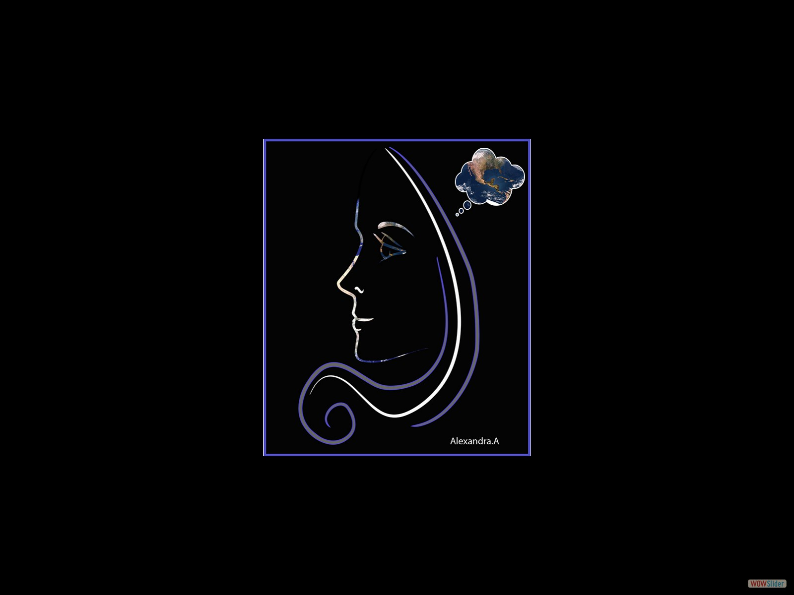
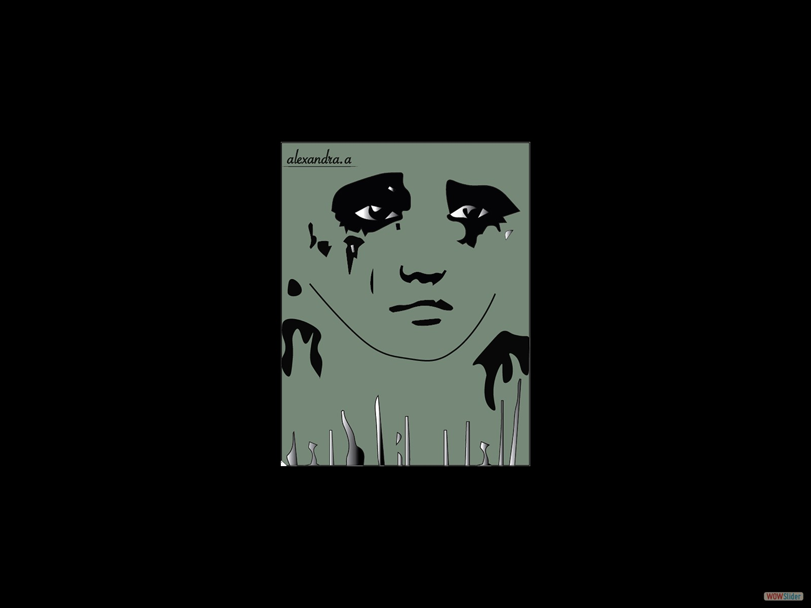
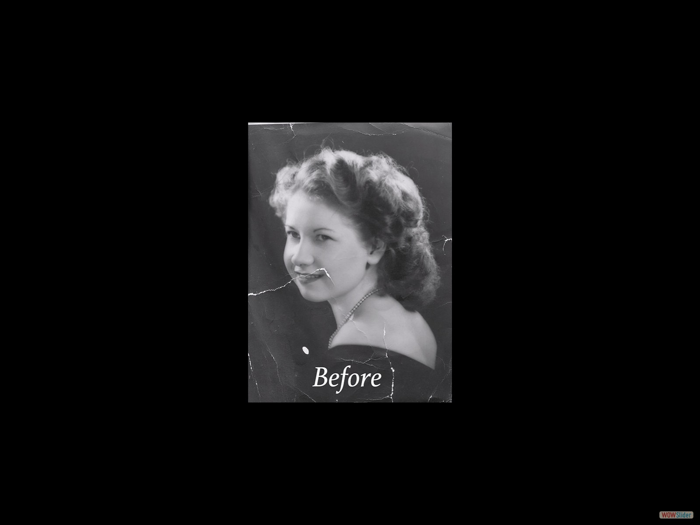

This is an old black and white image with rips.
This is the imager after restoration using Photoshop to clean the rips and help bring the image to its original condition.
1
2
3
4
5
6
http://wowslider.com/
by WOWSlider.com v8.7.1m